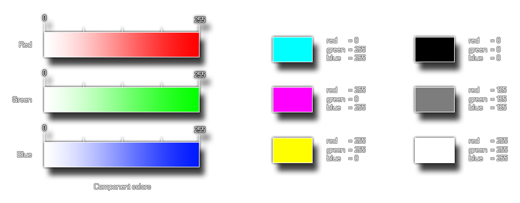

Sintaxis:
make_colour_rgb(red, green, blue);
| Argumento | Descripción |
|---|---|
| red | El componente rojo del color |
| green | El componente verde del color |
| blue | El componente azul del color |
Devoluciones: valor
GameMaker Studio 2 proporciona esta función (y otras) para permitir al usuario crear sus propios colores. Esta función particular toma tres partes componentes, los componentes rojo, verde y azul del color que desea hacer. Estos valores se toman entre 0 y 255, por lo que puede hacer 16.777.216 (256 * 256 * 256) colores con esto. A continuación puede ver una imagen de cómo se ven estos componentes cuando están separados:  La imagen de la izquierda es un desglose de los componentes individuales de la función, y luego a la derecha se muestra una ilustración de cómo el cambio de estos componentes afecta el color final.
col = make_colour_rgb(100, 145, 255);
El código anterior usa la función para crear un color y almacenar su valor en la variable "col" para su uso posterior.